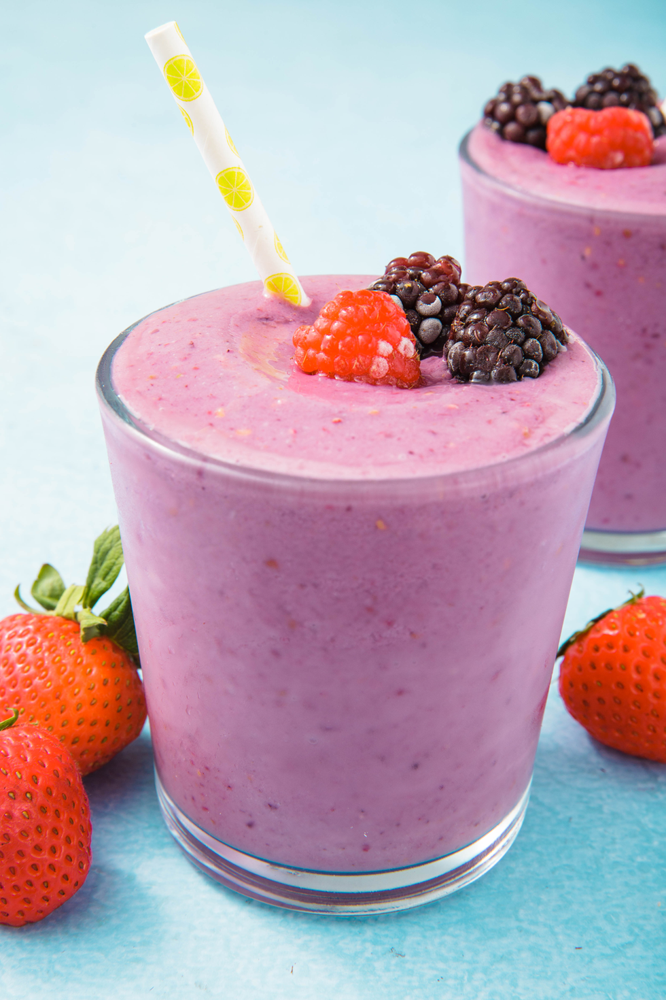

Home
Fruit Smoothie

Description
Fruit smoothies are a great way to start the day! This recipe contains blueberries, raspberries, and blackberries
for antioxidants, spinach, chard, and kale for iron, calcium, magnesium, potassium, and vitamins A, C, and K
(don't worry, you can't taste them in the smoothie), and orange juice for vitamin C and taste. It's simple, easy
to make, and provides a kickstart for your energy that's much healthier than coffee.
Ingredients
- One cup of mixed leafy greens (I use spinach, chard, and kale, the so-called "power greens.")
- One cup of mixed berries (I use blueberries, raspberries, and blackberries.)
- Enough orange juice to cover the rest of the ingredients
Instructions
- Wash the leafy greens and berries.
- Place the leafy greens and berries in a blender.
- Pour orange juice over the leafy greens and berries until they are below the surface.
- Blend until smooth.